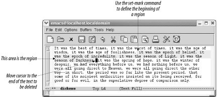
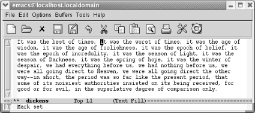
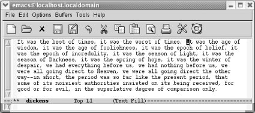
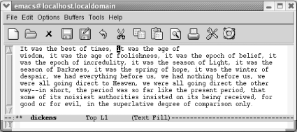

2.3 删除，移动或修改标记的文本
如果你想删除一个短语，半个段落或者多个段落会怎么做？在Emacs中，你选择的一块文本称为 区域 。你可以用 鼠标或者键盘标记一个区域。用鼠标时会有些复杂，所以我们会在讨论系统剪切板后再行介绍。
用键盘定义一个区域，你使用一个辅助指针，我们称之为 标志 。一些版本的Emacs会在显示屏上显示标志；不幸 的是，在GNU Emacs里不显示。
在区域的一端按 C-Space 或者 C-@ 设置标记，然后移动光标到区域的另一端。(光标有时也被称为 点 (Point) 。然而，光标和点有一个小小的但是很重要的区别。光标是在字符之上的，而点是实际上是在光标所在字 符与之前字符之间。正如我们所言，这是一个比较小的区别，但它有助于你理解在标定区域时光标应该到标记到什 么位置。)图2-5说明点，标志，和区域。

图2-5 点，标志和区域
我们来标记一个示例区域，移除短语"it was the worst of times"。首先，我们找到短语的开头，然后我们设置标 记，向前移动到短语结尾，然后剪切。
| 移动到起始位置“it”然后按 C-space |
|---|
|  |
| 设置标志； Mark Set 出现在迷你缓冲区中 |
| 将光标移动到“it was the age of wisdom。”中的“i”。 |
|---|
|  |
| 因为点（point）就在当前标记的区域之后。 |
现在已经标记好区域。在执行删除指令之前，如果标记区域没有高亮显示，你需要先确认是否已经正确地标记区域 了。按 C-x C-x (表示*exchange-point-and-mark* )；这个指令让光标显示位置在标志与点之间相互切换。如果 光标移动到了你想标记的位置，说明区域已经正确标记了。尤其是在你看不到 标记 的时候，删除区域前用 C-x C-x 检查标记的区域是个良好的习惯。一些用了几年Emacs的人仍然会忘了标记区域就在不知情的情况进行删 除操作。（绑定到 c-_ 和 c-x u 的撤消指令迟早会在派上用场）
删除区域，按 C-w （表示 kill-region )。（工具栏的剪刀图标也是这个功能。）
| 按： C-w |
|---|
|  |
| C-w 剪切区域 |
如果不确定删除了哪些内容，只要按 C-_ 就可以还原。文本仍旧被标记着，你可以再次按C-w来删除它。移动文 本，标记区域，按 C-w 剪切区域，移动光标到你想插入文本的位置，然后按 C-y 。如果你在错误的位置还原 了文本，只要按 C-_ 来撤销，然后移动到正确的位置，再次按*C-y* 插入文本。
标记一个区域时，一般是先标记一端然后把光标移动到区域的另一端。针对一些常见情况定义了相应的快捷键。标 记一个段落，按 M-h 。可以设置标记到段尾并将光标自动移动到开始位置。类似的， C-x h (表示 mark-whole-buffer )标记整个缓冲区；光标移动到开头，并且标记到尾部。最后， C-x C-p 标记当前页，标 记那些在文本模式下用 C-l 分页符分割好的文本。当然，标记段落，页面，或者缓冲区一般只是其他操作（剪 切， C-w ）的前奏而已。
2.3.1 复制文本
要复制文本，先标记一个区域，再按 M-w （表示 kill-ring-save ; 工具栏的两张纸的图标也可以执行此功 能）。将光标移动到你想插入复制的文本的位置然后按 C-y 。复制文本与剪切文本是一样的，只不过Emacs不删 除任何东东而已。复制的文本被放入杀戮环（kill ring），所以你可以随时通过 C-y 访问它。
M-w 的优势还在于可以在只读文件和缓冲区中使用。例如，如果你想创建一个Emacs技巧文件，可以使用 M-w 来复制在线帮助文本到你的缓冲区中。
针对一般的删除任务的操作。
标记区域：
- 将光标移动到要删除区域的起始位置。
- 按 C-Space 。Emacs显示提示信息 Mark set 。
- 将光标移动到要删除区域的结束位置。
删除一个区域：
- 标记被删除区域。
- 按 C-w 删除区域。
移动文本：
- 使用标记和删除区域的过程来删除你想移动的文本。
- 将光标移动到你想插入文本的位置。
- 按 C-y 。Emacs插入刚删除的文本。
复制文本：
- 标记你想复制的区域。
- 按 M-w 复制文本。
- 移动光标到你想插入文本的位置，然后按 *C-y*。Emacs插入刚复制的文本。
2.3.2 还原早期的删除内容
之前提到的杀戮环是Emacs存储你删除内容的区域。当下，我们假设你想还原你刚刚删除的内容。然而杀戮环会做的 更多。它能保存你最近30次的删除内容。我们已经看过了， C-y 可以还原你最近删除的内容。输入 M-y 删除 你刚还原的文本，并从杀戮环还原次最近的文本。
这里显示它如何工作。在表2-4中，假设你已经删除了“most recent”。 C-y 从杀戮环中还原这几个单词。当你按 M-y ,Emacs会删除“most recent”并且得到下一个杀戮环的内容（“倒数第二个”）。
| 快捷键 | 功能 |
|---|---|
| C-y | 这是最后一次删除的内容 |
| M-y | 这是倒数第二次删除的内容 |
| M-y | 这是倒数第三次删除的内容 |
| M-y | 这是倒数第四次删除的内容 |
你可以连续按 M-y ,获取更早删除的内容，直到你达到杀戮环的尾部（此时，又会循环到最近一次删除的文本， 这就是为什么称其为环的原因）。
保存最近30次删除是比较合适的，这比大部分程序提供的多多了。不过你可以修改参数 kill-ring-max 来增大或 减小杀戮环的保存次数。做个试验，执行指令： M-x set-variable Enter kill-ring-max Enter new-value Enter ( new-value 表示一个数字)。
2.3.3 选择和粘贴
使用菜单，你可以更直接的访问杀戮环中的内容：选择 Edit -> Select and Paste 。菜单会显示删除的内 容，并且在最上面显示最近删除的内容。为了尽量显示更多的删除内容，窗口中每行代表一组删除的内容。所以， 如果你删除了一个很大的区域，比如500行，那么你只能看到第一行，省略号，和删除内容的结尾。你的选择会插入 到光标所在位置。
表2-5 总结了对区域操作的指令
| 快捷键 | 指令名称 | 功能 |
|---|---|---|
| C-@ or C- Space | set-mark-command | 标记区域的开始或结束 |
| C-x C-x | exchange-point-and-mark | 将光标在区域的两端切换 |
| C-w | kill-region | 剪切区域 |
| C-y | yank | 粘贴最近删除或复制的文本 |
| M-w | kill-ring-save | 复制区域到杀戮环，因此可以用 *C-y* 粘贴 |
| M-h | mark-paragraph | 标记段落。 |
| C-x C-p | mark-page | 标记页。 |
| C-x h | mark-whole-buffer | 标记整个缓冲区。 |
| M-y | yank-pop | 执行 C-y 之后，粘贴之前的删除内容。 |
Date: 2010-11-17 23:02:15 CST
HTML generated by org-mode 6.36c in emacs 23